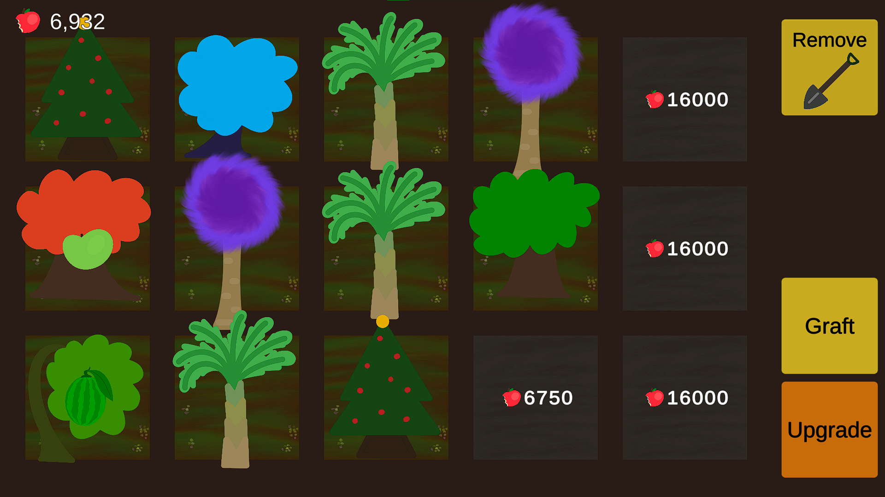

Tree Game
Winner of the People's Choice award at the Macquarie University's Revive Game Jam, Tree Game is an idle tycoon clicker, where you grow and harvest apples, spending the fruits of your labour to unlock upgrades for your orchard. This was the first game jam I participated in, and learnt a lot about making a UI that is easy for players to understand and use. Play the game on itch.io.
My Contributions:
- Developing the UI
- Created a script for each UI menu, including a simple upgrade/crafting menu UI
- Adapted and reworked according to supervisors feedback
- Upgrades
- Implemented the code behind the upgrade system, making sure each upgrade has the desired effect
- Tree Removal
- Implemented the ability to remove trees from plots
- Added a UI button, as well as a shovel to follow the player's mouse for readability
